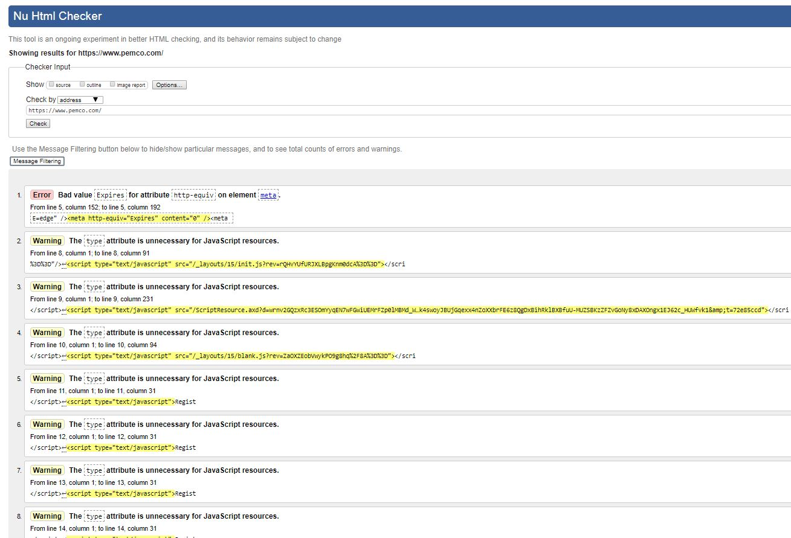
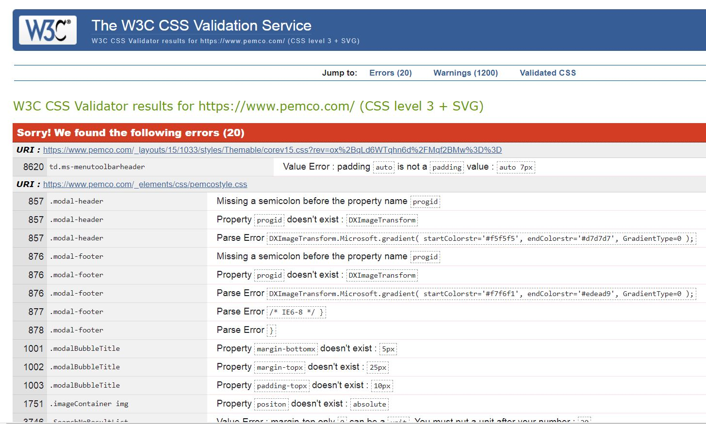
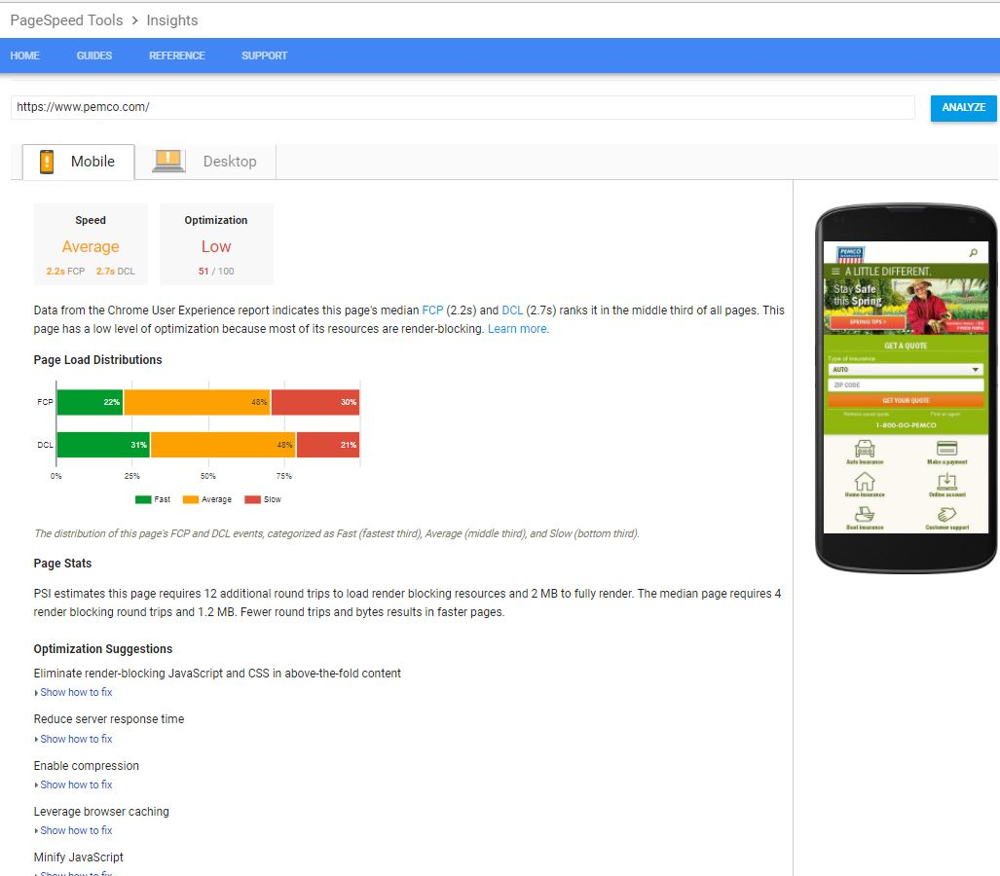

PEMCO.com Website Assessment |
|||
Assessment Criteria |
PASS/FAIL |
Screenshot of Results |
Recommendations |
|---|---|---|---|
| Website passes the W3C validator | Fail |  | 1. Move away from the multiple column layout to a single vertical stack. This will keep form field
requirements, error messages and other important information in the customers line of sight. 2.The 'home' page is to busy and not user friendly; however, the other pages are crisp and clean. Update the 'home' page to look like the other pages. This will enable customers to focus in on what they need and find it quickly. |
| Website passes CSS validator | Fail |  | 1. Add either an on-hover underline or have the links the customer has clicked on change color
This will let them know where they've already been on the site. 2. Add a "Back to Top" links at the end of each section to help customers quickly and easily get back to where they were, if lost. And if they decide not to go "Back to Top" they will understand they are moving to the next section of a page. |
| Website status using PageSpeed Insights | Pass? |  | 1. Reduce the number of render blocking resources on the 'home page' by focusing on minimizing the use of blocking JavaScript
from external scripts that have to be fetched before they can be executed. 2.Reduce the number of images on the page and/or enable compression to reduce the total size of the response. |